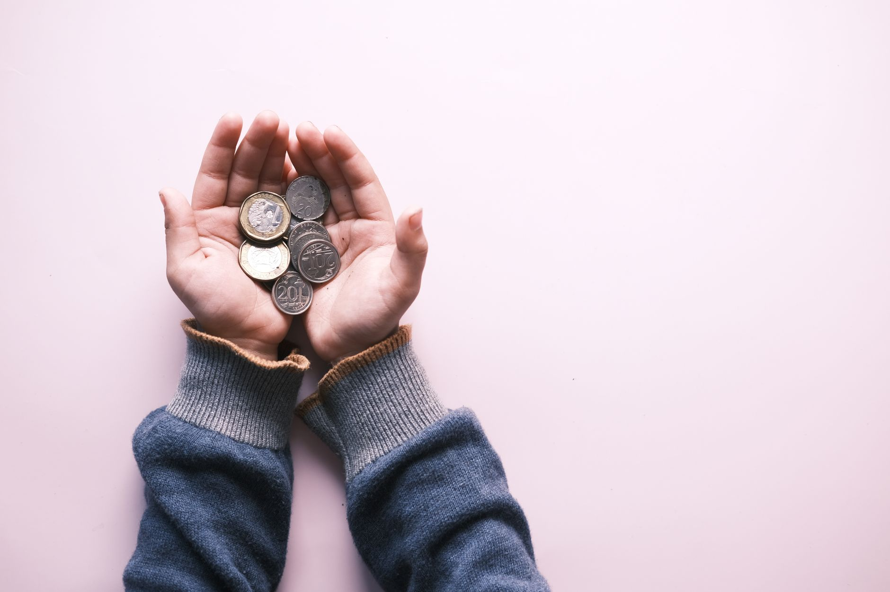

In 2026, a one-ounce American Silver Eagle sells for about 8 to 12 percent above the spot price at major online dealers (APMEX, live pricing, retrieved June 2026). Walk into most local coin shops and that same coin often sits at 12 to 18 percent over spot. Buy the same amount of silver as a generic round from an online dealer, and that premium drops to 3 to 6 percent. Every purchase channel has a different price structure, and knowing which to use for which product cuts real money out of your cost per ounce over time.
This guide covers the three main places to buy physical silver in the USA, what each costs, and where new buyers should start. Before comparing channels, it helps to know what makes up a silver premium so you can evaluate any quoted price accurately.
- Online dealers carry the widest selection and lowest premiums for generic rounds and bars, typically 3-8% over spot
- American Silver Eagles carry a higher mint-set premium of 8-12% regardless of where you buy; the channel affects how much above that floor you pay
- Local coin shops charge more per ounce but offer no shipping, immediate physical possession, and a relationship for future selling
- Private sales (eBay, Reddit, Facebook) can reach near-spot pricing but require you to verify every piece before paying
- Paying by check or ACH instead of credit card saves 3-4% at most online dealers
The Three Main Places to Buy Physical Silver
In 2025, the Silver Institute's World Silver Survey estimated global silver demand at over 1.2 billion ounces for the year (Silver Institute, World Silver Survey 2025). Most retail buyers in the USA access that market through one of three channels. Each has a different premium structure, minimum order, and risk profile.
- Online dealers (APMEX, JM Bullion, SD Bullion, Monument Metals): widest selection, competitive pricing, ships to your door. Premium varies by product type and payment method.
- Local coin shops (LCS): no shipping wait, see the product before buying, relationship-based buying. Premiums are typically higher than online for the same item.
- Private sales (eBay, Facebook Marketplace, Reddit r/pmsforsale): can reach near-spot or at-spot pricing. Risk of receiving fake silver is real. Requires testing before sending payment.
Banks and credit unions rarely sell physical silver. If yours does, the premium and selection are usually worse than online dealers. Pawn shops buy silver below spot and sell above it, often with higher margins than coin shops. They're a last resort for buying, not a primary channel.
Buying Silver Online: What the Three Largest USA Dealers Charge
In 2026, APMEX, JM Bullion, and SD Bullion collectively serve the majority of retail silver buyers in the USA. All three are authorized distributors for the US Mint, which means their American Silver Eagles come with a verified chain of custody. The premium you pay over spot depends on three factors: the product type, your order size, and your payment method.
The chart below shows the typical premium range for common silver products at major online dealers in mid-2026, normalized to the highest-premium product as the baseline:
All three major dealers offer a payment discount of 3 to 4 percent when you pay by personal check, money order, or ACH bank transfer instead of credit card. On a $3,200 order of 100 ounces, that discount saves $96 to $128. It's the single easiest way to reduce what you pay. Payment by credit card also adds chargeback protection if something goes wrong with the order, so for your first purchase that tradeoff may be worth it.
Minimum orders vary. Most online dealers have no minimum. But free shipping typically kicks in at $199 or $200, so orders below that add $5 to $9 in shipping cost. Stack your purchases to hit the free shipping threshold. A single 100 oz bar or a tube of 20 rounds will usually qualify.
What to Expect at a Local Coin Shop
Local coin shops charge more per ounce than online dealers on most products. That's not a flaw in the model. You're paying for three things: the convenience of immediate possession, the ability to inspect before buying, and a relationship with a buyer for when you want to sell.
A coin shop that buys at $1 below spot and sells at $5 above spot on generic rounds is making $6 per ounce. That spread pays for overhead, staff, and inventory. An online dealer making $0.90 per round on a 10,000-round order has very different economics. Neither is "ripping you off." They're different business models.
Three things make a local coin shop worth using despite the higher price:
- Visual inspection before purchase. You can see if a coin is cleaned, damaged, or poorly struck. You can weigh it on the shop's scale. That verification has value, especially for pre-1965 junk silver or older coins where condition varies.
- Same-day liquidity. If you need to sell quickly, a coin shop you've bought from will give you a better buyback price than a shop that doesn't know you. Building a relationship over multiple purchases means better exit pricing when you need it.
- No shipping or wait time. You leave with your metal. For buyers who don't want to track a package or have silver sitting in a mailbox, that immediacy matters.
Shop around before committing. Coin shop premiums vary widely even within the same city. One shop might charge 8 percent over spot on Eagles, another might charge 16 percent on the same coin that day. Call ahead, ask for the current price on specific products, and compare two or three shops before buying.

Private Sales: eBay, Reddit, and Facebook Marketplace
Private silver sales take place on eBay, Reddit's r/pmsforsale community, and Facebook Marketplace. The appeal is price. In 2025, eBay charged sellers a 12.9 percent final value fee on precious metals (eBay, Seller Fee Schedule 2025). That fee forces sellers to price above what they actually want for the metal. After fees, a seller wanting $2 over spot on a one-ounce round needs to list it at roughly $4.50 over spot to net their target. The "deal" you see on eBay is often built around eBay's cut, not the seller undercutting the market.
Reddit's r/pmsforsale works differently. Sellers post directly to verified community members. No platform fee. Deals genuinely reach at-spot or $0.50 over spot for common rounds and circulated junk silver. The risk is real, though. You're sending money to someone you've never met. The community uses verified trader flair (a comment count-based trust system) to screen sellers, but flair doesn't eliminate fraud.
Facebook Marketplace silver sales are local and immediate. If a seller lists a tube of rounds in your city, you can meet, inspect, test, and pay in person. That eliminates shipping risk and allows physical testing before money changes hands. Prices vary. Some sellers are coin shop owners moving overflow inventory at dealer prices. Others are estate sales or new stackers who don't know current spot and price too high. Worth checking weekly but unreliable as a primary source.
Any time you buy from a private seller, test before you pay. Know how to detect fake silver at home using weight, dimensions, and the ice test. A $3 neodymium magnet test takes 10 seconds and will catch most plated fakes immediately.
How to Pay Less in Premiums Regardless of Channel
Three tactics work at any purchase channel and compound over time as your stack grows:
Pay by check or ACH. Every major online dealer charges 3 to 4 percent more for credit card purchases. That's not a fee they absorb. It's added directly to your price. Set up an ACH transfer with your bank, use it for silver purchases, and you've cut your effective premium by three percentage points with zero effort.
Buy rounds and bars instead of Eagles for your base stack. An American Silver Eagle and a one-ounce generic silver round contain identical amounts of .999 fine silver. The Eagle carries a higher premium because of its legal tender status and collector appeal. If silver content is your only goal, the round is the better deal. Buy Eagles if collectibility or legal tender status matters to you. See our full breakdown of coins vs rounds vs bars for a detailed comparison.
Buy during market dips. Silver spot price moves. A day when spot drops 3 percent is functionally a 3 percent discount on everything you buy. Check spot on a site like Kitco or APMEX before placing large orders. Buying on a quiet down day rather than a spike day can shave as much from your cost as switching payment methods.
Where New Buyers Should Start
If you've never bought silver before, start with an established online dealer and a modest first order of 5 to 10 ounces in generic rounds. JM Bullion and SD Bullion both have lower typical premiums on rounds than APMEX and clear, beginner-friendly checkout flows. Pay by check for your first order if you're comfortable waiting the 5-7 business days for the check to clear. Otherwise use a credit card for chargeback protection on your first transaction.

After your first online purchase arrives, visit a local coin shop with one of your rounds in hand. Ask what they'd pay for it. That number tells you exactly what the current local buyback market looks like and gives you context for every future purchase. You'll also get a feel for whether the shop is worth building a relationship with for future buying.
As your stack grows past 50 ounces, start watching r/pmsforsale. The deals there are genuine for verified sellers, and at that stack size saving $0.50 to $1.00 per ounce compounds meaningfully. Never buy from a seller with fewer than 10 confirmed transactions and no flair.
Frequently Asked Questions
Read next: Understanding silver premiums to know exactly what you're paying for and how to spot when a price is out of line with the market.
Sources
- APMEX, "American Silver Eagle Live Pricing," retrieved June 2026, apmex.com
- Silver Institute, "World Silver Survey 2025," retrieved May 2026, silverinstitute.org
- eBay, "Seller Fee Schedule 2025," retrieved May 2026, ebay.com
- JM Bullion, "Silver Rounds Pricing," retrieved June 2026, jmbullion.com
- SD Bullion, "Silver Bars Pricing," retrieved June 2026, sdbullion.com